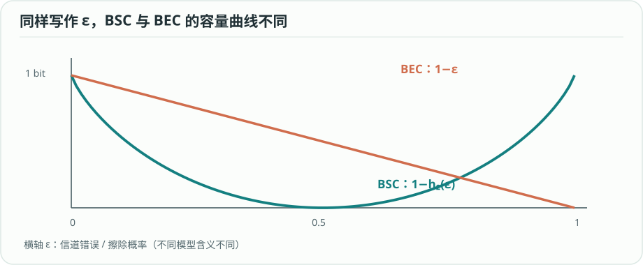
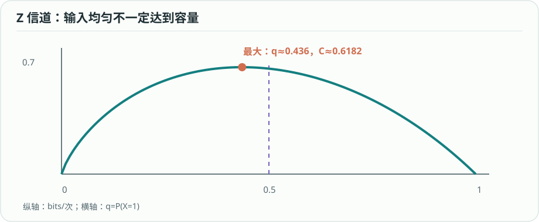
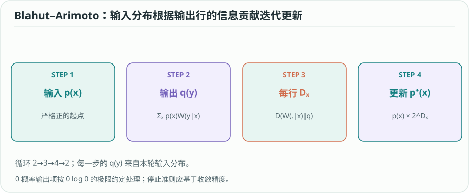

同一条信道，不同的发送策略为什么传递不同信息？
想象一条从来不会把输入 0 变成 1、却有时把输入 1 变成 0 的不对称信道。如果发送方极少使用 1，那么接收端只会看到一串几乎全是 0 的输出；反过来，如果发送方有策略地改变输入分布，输出就可能携带更多关于输入的信息。
因此，信道容量不是固定输入分布下随手算出的互信息，而是保持信道转移矩阵不变，在所有合法输入概率分布上最大化互信息得到的值。
容量公式：先分清信道与发送策略
固定转移核 W(y|x)，由输入分布 p(x) 得到输出 q(y)=∑ₓp(x)W(y|x)，互信息可写为 H(Y)−H(Y|X)。容量定义为所有输入分布上的最大值：
互信息对输入分布是凹函数。对有限字母表，概率单纯形是紧集，因此最大值可达到；但最优点可能落在边界，也可能有多个最优解。
为什么 BSC 的最优输入是公平比特？
对 BSC(ε)，当输入均匀时输出也均匀，于是 H(Y)=1 bit；由于给定 X 后，唯一剩余的不确定性来自翻转噪声 N，H(Y|X)=h₂(ε)。对任意其他输入，H(Y)≤1，而 H(Y|X) 仍等于 h₂(ε)，所以公平输入最优。
若 ε=0.1，容量为约 0.5310 bit/次使用；ε=0.5 时容量为 0；ε=1 时输出就是输入逐位取反，容量又等于 1。若只把 ε 限制到 [0,0.5]，则曲线单调递减。
为什么擦除信道只损失 ε 比例的信息量？
在 BEC(ε) 中，输出未擦除时会精确揭示发送比特；擦除发生时毫无区分能力。对任意输入分布，I(X;Y)=(1−ε)H(X)，最大值在均匀输入时达到：

非对称 Z 信道：最优输入可能不是 50:50
考虑 Z 信道：发送 0 永远收到 0；发送 1 以 0.2 的概率收到 0，以 0.8 的概率收到 1。令 q=P(X=1)，那么 P(Y=1)=0.8q，H(Y|X)=q h₂(0.2)，于是：

只改变输入先验，始终固定 Z 信道误差 0.2；滑块显示的是该输入下互信息，曲线顶点才是容量。
Blahut–Arimoto 怎样寻找更优的输入分布？
对于任意给定的有限转移矩阵，可从所有输入概率都为正的初始分布出发，反复计算当前输出混合分布 q(y)、每一行信道输出 W(·|x) 相对 q 的 KL 散度 Dₓ，然后更新输入分布。

在计算中应监控当次 I(X;Y)、输入概率变化与迭代停止容差。算法数值收敛不等于“已经找到物理层真实吞吐量”，真实链路还有调制、帧长、同步与编码复杂度等成本。
from examples.channel_coding import (
blahut_arimoto, bsc_matrix, mutual_information
)
C, p = blahut_arimoto(bsc_matrix(.1))
assert abs(C - (1-0.468995593589)) < 1e-7
assert abs(p[0] - 0.5) < 1e-7
W = ((1.0,0.0),(.2,.8))
Cz, pz = blahut_arimoto(W)
assert 0.6182 < Cz < 0.6183
assert 0.43 < pz[1] < 0.44
print(Cz,pz)容量给的是“能做到多可靠”的信息论边界
容量 C 说明在规定的 DMC 模型下，速率 R<C 时存在随块长增大而使平均块误码率趋向 0 的编码序列；反过来 R>C 的固定速率序列不能使错误概率趋于 0。并不是说任意现成码、任意有限块长都能立即达到这个极限。
来源与延伸阅读
- MIT 6.441 Lecture 8：BSC/BEC 容量与互信息最大化。
- Blahut (1972), Computation of Channel Capacity and Rate-Distortion Functions：容量数值迭代。
- MIT 6.441 (2016)：容量、信道编码理论及停止误差讨论。